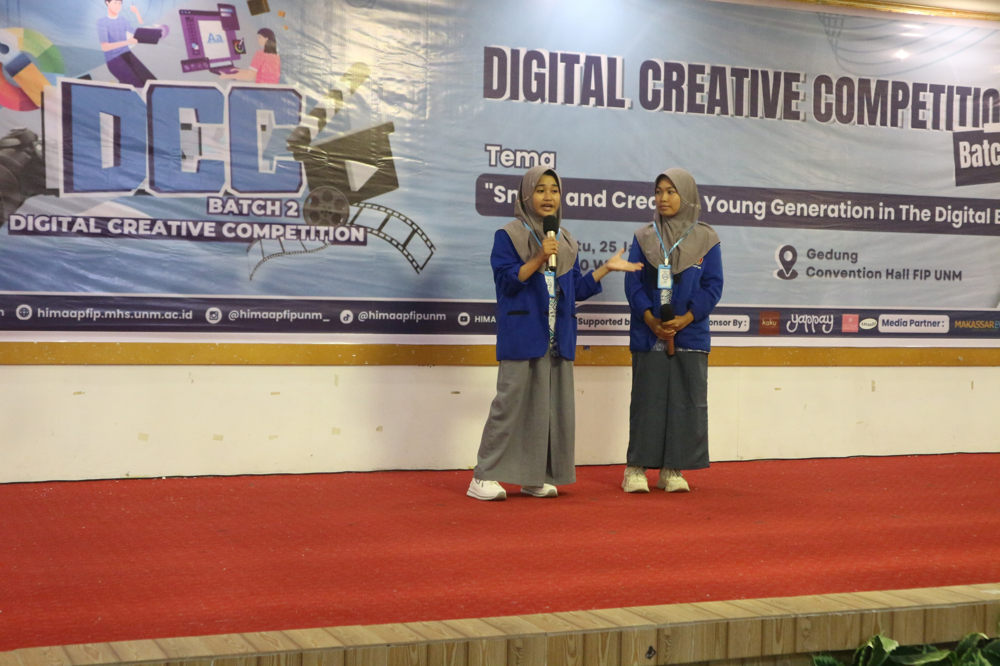

NEWS
Berita SMAN 9 Wajo

Finalis UPT SMA Negeri 9 Wajo berhasil melaju ke tahap akhir dalam ajang Digital Creative Competition yang diselenggarakan oleh Fakultas Ilmu Pendidikan, Universitas Negeri Makassar. Kompetisi ini menjadi ajang bergengsi bagi siswa dalam menampilkan kreativitas dan inovasi di bidang digital, termasuk desain poster dan videografi.
Dengan bimbingan dari para guru, tim finalis telah mempersiapkan diri dengan maksimal. Mereka tidak hanya mengasah keterampilan teknis, tetapi juga memperkuat konsep dan pesan yang ingin disampaikan dalam karya mereka. Dukungan penuh dari sekolah dan teman-teman semakin membangkitkan semangat mereka untuk memberikan yang terbaik.
Semoga para finalis dapat tampil dengan percaya diri dan meraih hasil terbaik dalam ajang ini. Sukses selalu untuk tim UPT SMA Negeri 9 Wajo, semoga prestasi gemilang dapat diraih!